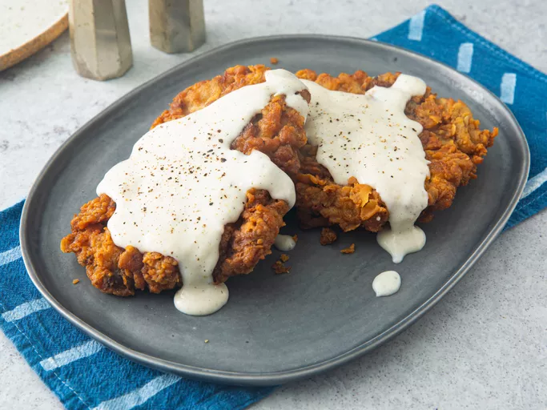

Fried Chicken Steak

Description
Chicken-fried steak is a classic Southern dish that features tenderized beef steaks, typically cube steaks, coated in a seasoned flour mixture, fried until crispy, and served with a creamy gravy. Despite its name, the dish contains no chicken; the term "chicken-fried" refers to the method of preparation, which resembles that of fried chicken. This comfort food is cherished for its combination of a crunchy exterior and tender, flavorful meat inside.
To prepare chicken-fried steak, tenderized beef steaks are first seasoned and then dredged in a mixture of flour and spices. The coated steaks are then fried until golden brown and crispy. The dish is often accompanied by a creamy gravy, typically made from the pan drippings, milk, and additional seasoning, which complements the savory flavors of the steak. This hearty meal is commonly served with sides like mashed potatoes and green beans, making it a staple in Southern cuisine.
Ingredients
- 4 half-pound beef cube steaks
- 2 quarter-cups all purpose flour
- 2 teaspoons baking powder
- 1 teaspoon baking soda
- 1 teaspoon black pepper
- 3-quarters teaspoon salt
- 1 cup buttermilk
- 1 tablespoon hot pepper sauce
- 1 egg
- 2 clove garlics
- 3 cups vegetable shortening
- 4 cups milk
- kosher salt and ground black pepper to taste
Instructions to cook
- Place steaks between 2 layers of plastic and pound to a thickness of 1/4 inch.
- Place 2 cups flour in a shallow bowl.
- Stir together baking powder, baking soda 1 teaspoon pepper, and 3/4 teaspoon salt in second shallow bowl. Add buttermilk, Tabasco sauce, egg, and garlic; stir to combine.
- Heat shortening in a deep cast-iron skillet to 325 degrees F (165 degrees C). Place a wire rack over a sheet of parchment paper.
- While the shortening is heating, dredge a steak in flour to coat; shake off excess. Dip into buttermilk batter; lift up so excess batter drips back into the bowl. Press in flour again to coat both sides completely. Place breaded steak on the wire rack and repeat to bread remaining steaks.
- Fry steaks, in batches if necessary, until evenly golden brown, 3 to 5 minutes per side. Remove steaks to a paper towel-lined plate to drain. Cover with foil to keep warm while you make the gravy.
- Drain fat from the skillet, reserving 1/4 cup of the liquid and as much of the solid remnants as possible.
- Return the skillet to medium-low heat; add the reserved oil. Whisk the remaining 1/4 cup flour into the oil. Scrape the bottom of the pan with a spatula to release solids into the gravy.
- Stir in milk, increase the heat to medium, and bring the gravy to a simmer. Cook, stirring often, until thick, 6 to 7 minutes. Season with kosher salt and pepper.
- Transfer steaks to a platter and pour gravy over top.
Homepage